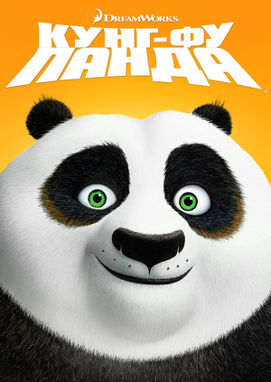
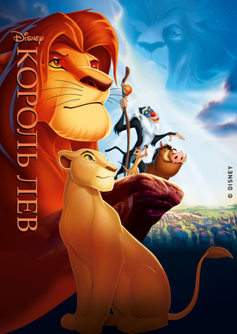
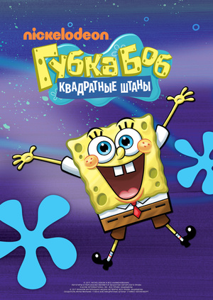

История разворачивается в Долине Мира, расположенной на территории древнего Китая. Среди местных жителей подрастает милая панда по
имени По. Он ленив, неуклюж и всегда голоден. С малых лет он с радостью помогает своему отцу в ресторане, но его душа втайне стремится
к чему-то большему.. И вот, наступает великий праздник, когда величайшие мастера кунг-фу должны назначить одного из своих учеников новым Воином Дракона. Однако, по воле
судьбы им становится По... Мультфильм Кунг-фу Панда рассказывает об одном неповоротливом и пухлом герое. Ещё с юных лет По мечтал обучиться кунг-фу и находиться в числе
лучших воинов Китая. Но сейчас он, к сожалению, занимается тем, что работает с отцом гусем в семейном заведении.
Король Лев
Диснеевский шедевр, одна из лучших мультипликационных картин за всю историю кинематографа — мультфильм Король Лев трогает не
только сердца детишек, но и зачерствевшие сердца взрослых циников. Вышедшая в 1991-м году анимационная картина по сей день радует
зрителей своей актуальностью, яркой рисовкой и безусловной искренностью. История о Муфасе — смелом короле всех зверей, его сыне Симбе и предателе Шраме. В жаркой саванне
разыграются такие придворные страсти, которые не снились даже Шекспиру с его «Гамлетом». Малыш Симба — будущий король всей саванны, он растёт в любящей семье, в которой его
постепенно готовят к его королевским обязанностям. Всё звериное королевство души не чает в непоседливом малыше, кроме его родного дяди Шрама, который уже много лет мечтает
свергнуть с трона своего старшего брата Муфасу, а наличие будущего наследника только уменьшает его шансы на корону. Коварный Шрам придумывает жестокий и подлый план,
вследствие которого погибает Муфаса.
Губка Боб Квадратные Штаны
Удивительные, очень интересные и смешные истории из жизни подводного городка Бикини Боттом, и его забавных морских обитателях.
Полюбившиеся и детьми, и их родителями персонажи мультфильма: Губка Боб квадратные штаны, Патрик морская звезда, белочка Сэнди,
кальмар по имени Сквидвард и многие другие подарят незабываемое зрелище. Многомиллионная армия любителей и поклонников данного мультипликационного сериала формируется с далекого
1999 года. Идея создания кумира огромного поколения из обычной губки пришла в голову сценаристам Стивену Хилленбёргу и Дереку Драймону. Воплощённый командой режиссеров и
мультипликаторов главный персонаж Спанч Боб — смешной и находчивый, приведет в восторг уже с первых минут знакомства с ним. Просмотр десятка сезонов доставит массу удовольствия
и незабываемых положительных эмоций. Новые серии продолжают периодически выходить в прокат.